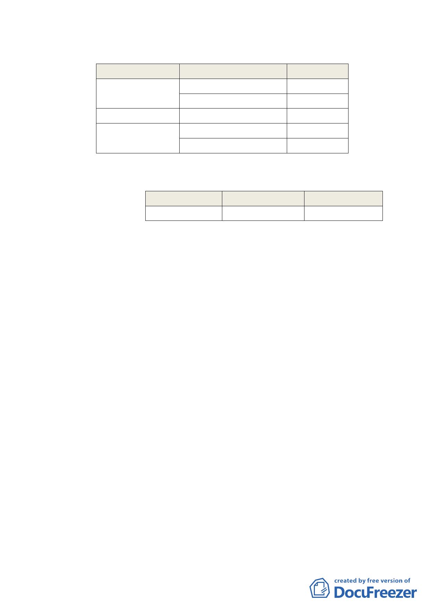

四、 變更計畫內容：
（一） 變更土地使用分區
原計畫
新計畫
面積（㎡）
第三種商業區
廣場用地
道路用地
道路用地
公園用地
公園用地
公園用地
第三種商業區（特）
450
147
1037
170
585
（二） 土地使用分區管制規定
1. 使用強度：
分區別
第三種商業區
2. 使用項目：
建蔽率（％）
65
容積率（％）
560
本計畫區使用項目適用「臺北市土地使用分區管制
規則」有關第三種商業區之規定。
（三） 計畫區得適用「促進都市再生 2010 年臺北好好看」開發
計畫案 1 項容積獎勵：地面人行通道。
（四）本案以都市更新方式開發。
五、 全案係市府98年7月3日府都規字第09831271600號公告公開
展覽並函送到會，本會於98年8月13日、98年11月12日召開「促
進都市再生2010年臺北好好看」開發計畫老舊社區組第7次、第
10次專案小組會議審議本案，專案小組審查意見及辦理情形
詳如附件一。。
六、 公民或團體所提意見：計7件。
七、 申請單位：臺北市政府
八、 法令依據：都市計畫法第27條第1項第4款及都市更新條例第
6、8條。
九、 98年8月13日專案小組審查意見：
（一）法令依據部分：有關本案之法令依據適用疑義，同意市府
採行將申請單位修改為「台北市政府」的方式辦理，並請修
-8-